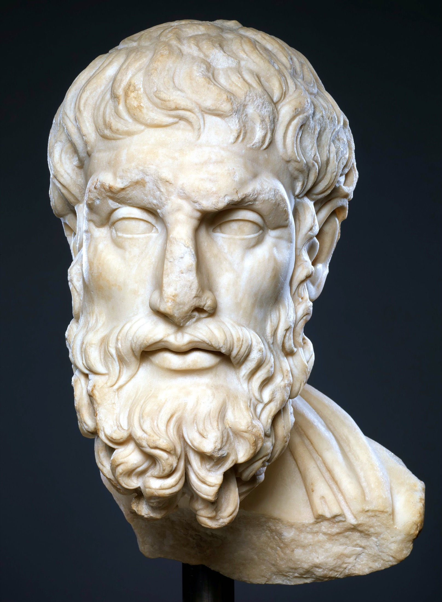
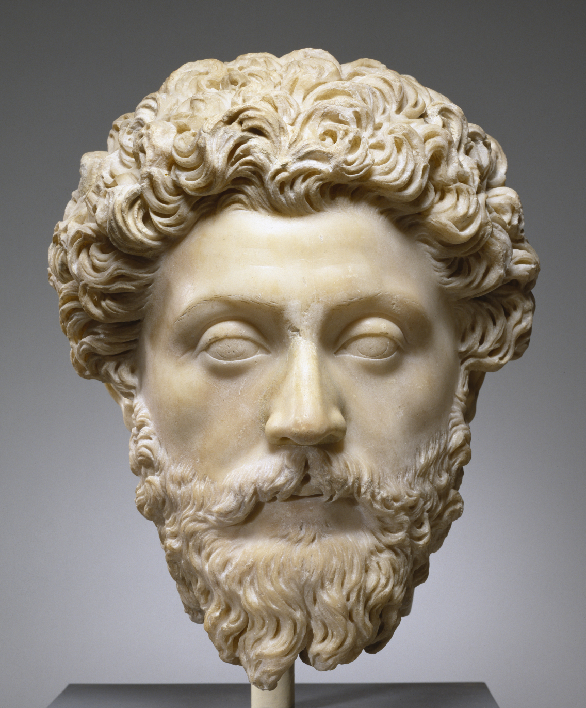

5. gaia · Filosofia helenistikoak
Aurreko gaiak sistema baten inguruan antolatu dira eta, ia beti, autore baten inguruan: Platon, Aristoteles. Hau bestelakoa da. Filosofia helenistikoak errotuluaren pean lau eskola biltzen ditugu (zinismoa, epikureismoa, estoizismoa eta eszeptizismoa), fundatzaile bera eta doktrina bera partekatzen ez dutenak, baina bai zerbait sakonagoa: filosofia zertarako den ulertzeko modu bera. Haiekin ixten da Antzinaroa, eta komeni da elkarrekin irakurtzea, elkarren kontrastean baino ez baita ulertzen bakoitza.
Bira batek senidetzen ditu. Greziar hirien mundua desegin eta inperio handiei bide ematen dienean, filosofiak utzi egiten dio batez ere errealitateaz edo hiri justuaz galdetzeari, eta galdetzen hasten da, premia berri batez, nola bizi behar duen bakoitzak, zoriontsu izateko gobernatzen ez duen mundu batean. Filosofia bizitzeko arte bihurtzen da, eta arimaren terapia; eta zoriona barrurantz bilatzen da, kanpoko ezerk kendu ezin dezakeen sosegu batean. Lehenik zoru komun hori azalduko dugu (nondik sortzen den eta zeren bila dabilen), eta gero lau eskolak zeharkatuko ditugu, gutxi gorabehera jaio ziren hurrenkeran, bakoitza helburu bererako bere bide propioarekin. Alexandriako Hipatiarekin itxiko dugu: bera ez da jada eskola hauetakoa, baina haren irudia, eta haren heriotza, antzinako munduaren amaieraren sinbolo bihurtu dira.
Polisetik inperiora
Babilonian, o.a.a. 323. urtean, Alexandro Handia hiltzen da (o.a.a. 356-323), eta harekin aro bat ixten da. Hamahiru urte eskasean, Mazedoniako erregeak mundu ezaguna konkistatua zuen, Greziatik Indo ibaiaren haraneraino, eta, hiltzen denean, inperio hura haren jeneralen artean banatzen da, monarkia handien konstelazio batean. Filosofia jaio zeneko mapa politikoa (hiri-estatu txiki independenteena, polisena) betiko desegin da. Aro helenistikoa deitzen diegu heriotza horretatik Erromaren nagusitasuna finkatu bitarteko hiru mendeei, eta filosofia helenistikoak, haietan loratzen diren korronteei: zinismoa, epikureismoa, estoizismoa eta eszeptizismoa.
Hiria horizonte izatearen amaiera. Filosofia hauek ulertzeko, neurtu egin behar da zer esan nahi izan zuen aldaketa politiko horrek. Polis grekoa ez zen izan gobernu-forma bat bakarrik: bizitza onaren esparru osoa zen. Aristotelesek gizakia «animalia politiko» (zóon politikón) gisa definitzen zuenean, berez hiriko komunitatean errealizatzera zuzendua (§19), uste partekatu bat adierazten zuen: polisetik kanpo, zioen, piztia edo jainko izatea beste aukerarik ez dago. Baina haren hurrengo belaunaldiak horixe bera ikusi zuen: tenpluak eta jaiak gordetzen zituzten hiriak, baina funtsezkoena, subiranotasuna, galdua zutenak. Axola zuten erabakiak jada ez ziren hiritarren biltzarrean hartzen, errege batzuen gorte urrunetan baizik. Gerraz eta bakeaz deliberatzen zuen hiritarra inperio erraldoi eta arrotz baten mendeko bihurtzen da, non haren botoak ez baitu ezer erabakitzen. Bizitza betea jada ezin bada hiriaren gobernuan bilatu, non bilatu?
Filosofia helenistikoen erantzuna aho batekoa da norabidean, edukian askotarikoa bada ere: kanpoko mundua kontrolaezin bihurtu bada, bizitza ona barruan bilatu behar da, gure baitan dagoen horretan. Filosofiaren grabitate-zentroa hiritik norbanakoarengana lekualdatzen da, eta teoriatik jokabidera. Galdera jada ez da «nola antolatu behar da polis justua?» (Platonena eta Aristotelesena), baizik eta «nola bizi behar dut nik, gobernatzen ez dudan mundu batean dohakabe ez izateko?». Barrualderako bira bera errepikatuko dute, mendeak geroago, ziurgabetasunezko beste aro batzuek.
Filosofia terapia gisa. Hortik dator eskola hauek guztiak ondoen definitzen dituen ezaugarria: filosofia terapia gisa ulertzen dute, arimaren medikuntza gisa. Ez dute jakintza jakintzagatik bilatzen, Platonen Akademiak edo Aristotelesen Lizeoak bezala, sufritzen duenaren osasuna baizik. Epikurok itzulingururik gabe esango du: «hutsa da giza oinazerik sendatzen ez duen filosofoaren hitzaldia; izan ere, gorputzeko gaixotasunak kanporatzen ez dituen sendagaiak ezertarako balio ez duen bezala, ezta filosofiak ere, arimaren oinazea kanporatzen ez badu»1. Filosofia bizitzeko arte bat da (téchne tou bíou): jakite praktiko bat, zeinaren xedea ez baita mundua deskribatzea, hartan larritasunik gabe bizitzen irakastea baizik. Filosofoa medikuaren antzeko zerbait bihurtzen da, eta doktrina, tratamendu baten antzeko.
Horrek familia-antz bat azaltzen du, gainerakoan elkarren aurkako diren eskolen artean. Laurek bi fronte handitan banatzen dute beren doktrina, modu batera edo bestera. Batetik, fisika bat edo logika bat: mundua zer den eta nola ezagut dezakegun azaltzen duen irudi bat, epikureismoak eta estoizismoak xehetasunez garatzen dutena eta zinismoak, aldiz, ia mespretxatzen duena. Bestetik, eta batez ere, etika bat: benetan axola duen zatia, huraxe baita sendatzen duena. Guztietan, fisika etikaren zerbitzura dago: natura ez da jakin-minez aztertzen, beldurretik askatzeko eta haren arabera bizitzen ikasteko baizik. Teoria bitartekoa da; sosegua, helburua.
Ideal komuna: ataraxia eta autarkia. Zertan datza guztiek bilatzen duten arima-osasun hori? Hemen ere funtsezkoenean bat datoz. Helburua ia beti bi hitz grekorekin izendatzen da, eta komeni da hasieratik gogoan hartzea, gai osoari bizkarrezurra ematen baitiote.
Ataraxia: asaldurarik eza, asaldaezintasuna. Sosegu-egoera bat, non arima ez baitute inarrosten ez beldurrak, ez antsietateak, ez ase gabeko desirak. Ez da poz aztoratua, lasaitasun sakon eta egonkor bat baizik: jada ezeren beldur ez denarena eta alferrik ezer irrikatzen ez duenarena. Epikurotarrek eta eszeptikoek, izen horrexekin, hura bihurtzen dute beren helburu aitortu; estoikoek oso hurbileko zerbait bilatzen dute apatheia izenaren pean: pasio asaldagarririk eza.
Autarkia (autárkeia): autoaskitasuna, nork bere buruarekin aski izatea. Jakintsu helenistikoak ahalik eta gutxien egon nahi du kontrolatzen ez duenaren mende (zoriaren, kanpoko ondasunen, besteren iritziaren mende), horrela bakarrik geratzen baita haren sosegua salbu. Zenbat eta kanpotik gutxiago behar, orduan eta gutxiago kendu ahal izango dio munduak. Zinikoek erabateko soiltasuneraino eramaten dute ideal hori; gainerakoek leundu egiten dute, baina batek ere ez dio uko egiten.
Ataraxia eta autarkia asmo beraren bi aurpegiak dira: kanpokoaren mende egongo ez den barne-bake bat. Zoriona osasunaren, aberastasunaren, boterearen edo txaloaren mende balego, haiek bezain hauskorra litzateke, guztiak gal baitaitezke. Eskola helenistikoen apustu komuna zoriona lur seguru batera lekualdatzea da: norberaren barrura, inperio batek konkistatu ezin duen bakarrera.
Lau erantzun galdera bakar bati. Hondo partekatu horren gainean, eskola bakoitzak bere bidea marrazten du, eta bideetan bereizten dira. Zinikoak beharrak deuseztatuz bilatzen du autarkia, uko-egite probokatzailezko bizitza batean (§20). Epikurotarrak ondo ulertutako atseginean bilatzen du, zeina ez baita gehiegikeria, oinazerik gabeko sosegua baizik, lagunartean landua, politikatik aparte (§21). Estoikoak bertutean eta patua onartzean bilatzen du, kosmosa gobernatzen duen arrazoiaren arabera biziz (§22). Eszeptikoak, azkenik, ustekabeko bide batetik bilatzen du: iritzi oro etenda, ezer baieztatzeari uko eginda, lasaitasuna irits dadin, hain zuzen, jakiteko tema uzten dugunean (§23). Lau erantzun desberdin, batzuetan aurkakoak, guztiei benetan axola dien galdera bakarrari: nola bizi ondo, mundua jada aldatu ezin denean. Hurrenkera horretan irakurriko ditugu (gutxi gorabehera, jaio ziren ordena bera), eta gaia, eta harekin Antzinaroa, haien ilunabarra gorpuzten duen irudi batekin itxiko dugu: Alexandriako Hipatiarekin (§24).
§20 · Zinismoa
Zinismoa da eskola helenistikoetan zaharrena eta erradikalena, eta baita doktrinarik gutxien duena ere: apenas duen teoriarik, haren filosofia ez baita azaltzen, bizi egiten baita. Sistema bat baino gehiago, existitzeko modu bat da, probokazio deliberatu bat gizarteak jakintzat ematen duen guztiaren aurka. Horregatik ez dugu haren baitan aurkituko izen hori merezi duen fisikarik, ez ezagutzaren teoriarik: zinikoak espekulazioa mespretxatzen du, luxu alferrikako bat balitz bezala. Haren filosofia guztia etika da, eta muturreraino eramandako etika bat.
Sokratesen sustraia. Zinismoa Sokratesengandik dator, edo Sokrates posibleetako batengandik. Maisuaren ikasleen artean, Platonekin batera, Antistenes egon zen (o.a.a. 445 inguru - o.a.a. 365 inguru), eta hark ez zuen harengandik teoria jaso, eredua baizik: bizitza austero batena, bere buruaren jabe, erosotasunei eta besteren iritziari axolagabe (§06). Platonek maisuarengandik Formei eta jakiteari buruzko galdera jaso bazuen, Antistenesek bere buruaz aski den gizonaren irudia jaso zuen, gauzen balioa bertutearen arabera neurtzen duenarena, ez aberastasunaren ez ospearen arabera. Herentzia horretatik, muturreraino eramanda, sortzen da zinismoa.
Diogenes, txakurra. Haren figura nagusia Sinopeko Diogenes da (o.a.a. 412 inguru - o.a.a. 323), Antzinaroko pertsonaiarik ospetsuenetako bat, eta haren inguruan anekdota-saldo oso bat pilatu zen. Harengandik dator, seguruenik, eskolaren izena bera: kynikós hitzak «txakur-antzekoa», «txakurra bezalakoa» (kýon) esan nahi du, eta zinikoek harrotasunez beren egin zuten iraina. Txakurrak bezala bizi ziren, izan ere: etxerik gabe, lotsarik gabe, jabetzarik gabe, ohiturak esparru pribaturako gordetzen duena jendaurrean eginez, konbentzioen aurka zaunkaka eta boteretsuei hozka. Kontatzen da Diogenes upel batean bizi zela, haren jabetza guztia mantu bat, zakuto bat eta makila bat zirela, eta, haur bat eskuen hutsunean ura edaten ikusi zuenean, bere katilu bakarra bota zuela, soberan zegoen zerbait aldean erabili izana aurpegiratuz bere buruari.
Anekdotak, egiazkoak izan ala ez, doktrina bera dira: bakoitzak ideia bat irudikatzen du. Alexandro Handia, munduaren jabea, haren aurrean plantatu zenean eta eskatzen zuena emango ziola eskaini zionean, Diogenesek erantzun zion: «Baztertu zaitez, eguzkia kentzen didazu eta». Lurreko gizonik boteretsuenak ez zeukan ezer eskaintzeko ezer behar ez zuenari: eszena osoa autarkiari buruzko lezio bat da (ikus gai honetako zubia). Diogenesez kontatzen da, halaber, egun-argiz paseatzen zela kriseilu piztu batekin; zeren bila zebilen galdetuta, hala erantzuten zuen: «Gizon baten bila nabil»; hau da, benetako gizaki baten bila, bere naturaren arabera eta ez konbentzioen gezurraren arabera biziko zen norbaiten bila.
Naturaren araberako bizitza. Probokazioen azpian tesi xume eta serio bat dago taupaka. Zinikoak dio giza zorigaitza gizarte-konbentzioetatik (nómos) datorrela: aberastasuna, boterea, ospea, manera onak, lotsa, aberria, esklabo egiten gaituzten hitzarmen artifizialak dira, behar ez ditugun gauzak desiratzera eta haien beldur izatera eramaten gaituztelako. Mundu faltsu horren aurrean, zinikoak naturaren arabera bizitzea proposatzen du (katà phýsin): beharrak hertsiki naturala denera murriztea (gosea dagoenean jatea edo hotzetik babestea, esaterako), eta gainerako guztia mespretxatzea. Ezer behar ez duenak ez du ezer galtzeko beldurrik, eta, beraz, libre eta bere buruaz aski da. Autarkia, hortaz, ez da ondasunak metatuz konkistatzen, desirak deuseztatuz baizik. Honetan zinikoak irauli egiten du ohiko logika: ez da libreago gehien duena, gutxien behar duena baizik.
Sustrai horretatik beste bi ezaugarri sortzen dira. Lehenengoa askesia da (áskesis), ariketa, entrenamendua: bertutea praktika-kontua denez, eta ez teoria-kontua, zinikoa gabezian trebatzen da, hotza, gosea eta nekea pasatuz, arima gogortzeko eta fortunaren aurrean immune bihurtzeko, atletak gorputza entrenatzen duen bezalaxe. Bigarrena parresia da, hitz egiteko askatasuna: zinikoak egia aurpegira esaten dio edonori, beldurrik eta lausengurik gabe, ez baitu ezer galtzeko eta ez baitio inori atsegin eman behar.
Kosmopolitismoa. Konbentzioen arbuio horretatik etorkizun handiko ideia bat dator. Aberriaz galdetuta, Diogenesek erantzun zuen kosmopolita zela, kosmopolítes, «munduko hiritarra». Hiritartasuna polis jakin bateko kide izatea zen greziar batentzat, esaldi hori ia zentzugabekeria probokatzailea zen; baina zerbait berria iragartzen zuen. Hirien arteko mugak konbentzio artifizialak badira, jakintsua ez da inongo hiri jakin batekoa, gizadi osokoa baizik. Hiri txikien harresiak hautsi berriak zituen mundu batean, oihartzun sakona zuen giza komunitate unibertsalaren ideia horrek, aberrien eta tokiko legeen gainetik; eta estoizismoak bildu eta doktrina-mailara jasoko du (§22).
Kratesengandik Hiparkiarengana, eta estoizismorako zubia. Zinismoa ez zen eskola formal gisa transmititu, maisuarengandik ikaslearengana igarotzen zen bizimodu gisa baizik. Diogenesen oinordekoa Tebasko Krates izan zen (o.a.a. 365 inguru - o.a.a. 285 inguru): bere fortuna ez-nolanahikoa banatu zuen pobrezia zinikoa besarkatzeko, eta, Diogenes latzaren aldean, figura atsegin gisa gogoratua izan zen, ia aholkulari onbera gisa. Harekin lotzen da kasu aipagarri bat filosofiaren historiarako, eta emakumeek hartan izan duten lekurako: Maroneako Hiparkia (o.a.a. 350 inguru - o.a.a. 280 inguru), bere posizio erosoari uko egin ziona Kratesekin ezkondu eta filosofo ziniko gisa bizitzeko, gizonekin berdintasun osoan, emakumeak kanpoan uzten zituzten bankete eta eztabaidetan parte hartuz. Antzinaroko emakume filosofo bakanetako bat da, izena eta gertaeraren bat gorde dizkiogunetakoa, Aspasiaren ildoan (§08).
Kratesen garrantzi historikoa zinismoaz haraindi doa, haren irakaspenetik atera baitzen aroko eskolarik eragin handienekoa sortuko zuena. Zipretik etorritako merkatari gazte bat, Zitioko Zenon, Atenastik gertu naufragatu zen; halabeharrez liburu-denda batean sartu zen, Sokratesi buruzko kontakizunek liluratuta utzi zuten, eta galdetu zuen non aurki zezakeen halako gizon bat; Krates seinalatu zioten, une hartan bertatik igarotzen ari baitzen. Hala, estoizismoak (§22) zinismoan du sustraia: Zenonek zinikoarengandik ikasi zituen naturaren araberako bizitzaren ideala eta jakintsuaren autarkia, nahiz eta gero haren erradikalismoa leundu eta zinismoak mespretxatu zituen fisika eta logika erantsi zizkion. Zinikoa, estoikoentzat, figura miretsi eta deserosoa izan zen beti: beren idealaren beraren ispilu muturrekoa.
§21 · Epikureismoa
Diogenes hil eta urte gutxira, Epikurok (o.a.a. 341 - o.a.a. 270) bere izena eramango zuen eskola bat sortu zuen Atenasen, mendeetan zehar Antzinaroko bizi-alternatiba handietako bat izango zena. Zinismoa ez bezala, epikureismoa sistema oso bat da, bere fisikarekin eta bere ezagutzaren teoriarekin; baina, aroaren espirituari leial, dena xede praktiko bati begira antolatzen da hartan: zoriontasuna erdiestea, minik gabeko baretasun gisa ulertua2.

Lorategia. Epikurok Atenas kanpoaldeko baratzedun etxe batean irakasten zuen, eta handik hartu zuen eskolak izena: Lorategia (Kêpos). Ez zen ikerketarako akademia bat, bizimodu bat partekatzen zuten lagunen komunitate bat baizik, politikatik eta hiriko anbizioetatik aparte. Han, garaiko ohituraren kontra, emakumeak eta esklaboak onartzen ziren; horrek eskandalua eragin zien garaikideei, eta Lorategiko gehiegikeriei buruzko kalumniak elikatu zituen. Errealitatea kondairaren ia kontrakoa zen: bizimodu epikurearra soila eta neurritsua zen, eta adiskidetasuna zuen ardatz.
Kanonika: egiaren irizpidea. Epikurok kanonika deitzen dio bere ezagutzaren teoriari, kanón hitzetik: egiazkoa faltsutik bereiztea ahalbidetzen duen erregela edo kanona. Enpirismo zorrotz bat da: ezagutza oro zentzumenetatik dator, eta sentsazioak dira egiaren lehen irizpidea. Sentsazioek, dio, ez dute inoiz beren kabuz engainatzen; errorea gero sortzen da, adimenak haiei buruz presaka epaitzen duenean. Sentsazioei prolepsiak (prólepsis) gehitzen zaizkie, esperientzia errepikatuak gugan uzten dituen nozio orokorrak —«gizaki» edo «zuhaitz» ideia, gizaki eta zuhaitz askoren oroitzapenak eratua—, eta afekzioak (páthe), atsegina eta mina, bilatu beharrekoaren eta saihestu beharrekoaren irizpide direnak. Kanonikak garrantzia du etikaren oinak lurrean jartzen dituelako: ongia eta gaizkia ez dira Forma bereizien mundu batetik deduzitzen (§09); sentitu egiten dira, hemen eta orain, atsegin gisa eta min gisa.
Fisika: atomoak eta hutsa. Arima sendatzeko, bere beldurretatik askatu behar da, eta beldurrik handiena munduaren irudi faltsu batetik sortzen da. Horregatik berreskuratzen eta egokitzen du Epikurok Demokritoren atomismoa (§03): ez dago atomoak —partikula zatiezinak, betierekoak eta hautemanezinak— eta haiek higitzen diren hutsa besterik. Dagoen guztia, arima barne, atomo-agregatu bat da, haien talken zoriak osatzen eta desegiten duena. Jasotako fisikari ezaugarri propio eta eztabaidatu bat gehitzen dio Epikurok, clinamen edo desbideratzea: atomoak, erortzean, batzuetan beren ibilbidetik desbideratzen dira modu aurreikusezinean, eta indeterminazio ñimiño horretatik sortzen dira bai munduen eraketa, bai Demokritoren determinismo hertsiak uzten ez zuen askatasun-tarte bat.
Fisika materialista horretatik bi ondorio askatzaile datoz, hura ikasteko benetako arrazoia direnak:
- Jainkoei ez zaie beldurrik izan behar. Epikurok ez du ukatzen jainkoak existitzen direnik, baina defendatzen du, perfektuak eta zoriontsuak izanik, axolagabetasun bare batean bizi direla, munduaz eta gizakiez arduratu gabe. Ez zuten unibertsoa sortu, ez dute gobernatzen; ez dute saritzen, ez zigortzen. Jainkoen haserrearen beldurrak, hainbeste bizitza mikazten dituenak, ez du, beraz, inolako oinarririk.
- Heriotza ez da ezer guretzat. Arima gorpuzduna bada, atomo guztiz finez osaturiko agregatu bat, gorputzarekin batera desegiten da eta ez dio bizirik irauten. Eta heriotza sentsazio ororen desegitea bada, ez dago hartan ezer sentitzeko, ez, beraz, ezer beldur izateko. «Gu existitzen garen bitartean, heriotza ez dago present; eta heriotza present dagoenean, gu ez gara existitzen»: horregatik «heriotza ez da ezer guretzat»3.
Etika: atsegina, minik eza. Oinarri horren gainean altxatzen da etika, sistemaren bihotza. Epikuro hedonista da: haren ustez, atsegina (hedoné) da ongi bakarra eta bizitzaren berezko xedea, izaki bizidun orok jaiotzen den unetik bilatzen duela ikusteak frogatzen duenez. Baina haren hedonismoa ez da etsaiek egotzi ziotena, ezta gaur egun «epikurear» hitzak gogora dakarrena ere. Berak bilatzen duen atsegina ez da otorduarena, luxuarena edo neurrigabekeriarena, atsegin negatibo eta egonkor bat baizik: minik eza gorputzean (aponia) eta asaldurarik eza ariman (ataraxia, ikus gai honetako zubia). Atseginik handiena ez da asetze bizia, urduria eta iragankorra baita, ezeren minik eta ezeren faltarik ez duenaren egoera barea baizik. Horregatik dira atseginik fidagarrienak sinpleenak: «ogiak eta urak atseginik gorena ematen dute, behar dituenarengana hurbiltzen direnean».
Hortik dator desiren haren sailkapen ospetsua, ondo bizitzeko tresna praktikoa:
- Naturalak eta beharrezkoak: jatea, edatea, hotzetik babestea, adiskidetasuna, beldurra sendatzen duen jakintza. Erraz asetzen dira, eta zaindu egin behar dira, haien faltak mina sortzen baitu.
- Naturalak baina ez beharrezkoak: jaki finak, luxua, sexua. Ez da txarra haiez gozatzea, baldin badatoz; baina ez da haien atzetik lehiatu behar, kateatu egiten baitute.
- Ez naturalak ez beharrezkoak: mugarik gabeko aberastasuna, ospea, boterea. Hutsalak eta aseezinak dira, zorigaitzaren iturri, eta jakintsuak baztertu egiten ditu.
Jakinduria desira lehen motara mugatzean datza: naturala eta beharrezkoa denarekin asebetetzen ikasten duena ia autarkiko bihurtzen da, eta bere zoriontasuna zoriaren gorabeheretatik salbu jartzen du. Arimaren terapia hori lau erremediotan laburbildu zuen Epikurok, tradizioak tetrafarmakoa deitu zuena, «sendagai laukoitza»: jainkoei beldurrik ez izatea, heriotzari beldurrik ez izatea, ongia lortzeko erraza dela ikustea eta gaizkia jasateko erraza dela ikustea.
Adiskidetasuna eta erretiroa. Bi ezaugarrik ixten dute koadroa. Lehena, Epikurok adiskidetasunari ematen dion balio gorena: jakinduriak bizitza zoriontsu baterako eskuratzen dituen ondasunetan handiena da harentzat, eta Lorategiko lagun-komunitatea da bizitza barearen esparru naturala. Bigarrena, haren aholku politikoa, estoikoarenaren kontrakoa: «bizi ezkutuan» (láthe biósas). Anbizioak eta bizitza publikoak arima asaldatu eta kontrolatzen ez duenaren mende jartzen dutenez, jakintsu epikurearra politikatik erretiratzen da, eta beretarren esparru pribatuan bilatzen du zoriontasuna. Estoizismoak predikatuko duen konpromiso zibikoaren ifrentzu zehatza da, eta antzinako etikaren adarkatze handietako bat markatzen du.
§22 · Estoizismoa
Lau eskolen artean, estoizismoa da eragin handienekoa eta iraunkorrena: Atenasen sortu zen o.a.a. 300 inguru, mundu erromatarreko filosofia nagusi izatera iritsi zen, eta gaur egunera arte iristen den arrastoa utzi zuen. Epikureismoarekin partekatzen ditu sistema oso baten asmoa eta xede terapeutikoa, baina, puntuz puntu, ia kontrakoak diren mundu-irudi bat eta zoriontasun-ideia bat kontrajartzen dizkio4. Epikurotarra erretiratzen den lekuan, estoikoak konpromisoa hartzen du; epikurotarrak atsegina bilatzen duen lekuan, estoikoak bertutea bilatzen du; epikurotarrak atomoak eta zoria ikusten dituen lekuan, estoikoak arrazoiak ordenaturiko kosmos bat ikusten du.
Stoa eta haren hiru aroak. Izena irakastokitik dator: Zitioko Zenonek (o.a.a. 334 inguru - o.a.a. 262 inguru), Krates zinikoaren ikasle ohiak (§20), Stoa Poikílen irakasten zuen, Atenasko agorako «atari margotuan». Hortik, estoikoak, «atarikoak». Eskolak bizitza luze-luzea izan zuen, eta hiru arotan banatu ohi da: Stoa zaharra (Zenon eta, batez ere, Soloiko Krisipo, o.a.a. 279 inguru - o.a.a. 206 inguru, sistematizatzaile handia, zeinaz esan baitzen «Krisipo gabe ez zatekeen Stoarik izango»), Stoa ertaina eta Stoa erromatarra, ondoen kontserbatua, oraindik ere irakurtzen diren hiru autorerekin: Seneka politikari eta dramagilea (o.a.a. 4 inguru - o.a. 65), Epikteto esklabo askatua (o.a. 55 inguru - o.a. 135 inguru) eta Marko Aurelio enperadorea (o.a. 121-180). Esklabo batek eta enperadore batek filosofia bera aitortzeak berak zerbait esaten du haren mezuaz: barne-askatasuna ez dago kanpo-egoeraren mende.

Fisika: kosmos arrazional eta probidente bat. Estoikoek hiru zatitan banatu zuten filosofia (logika, fisika eta etika), eta irudi batez azaldu zuten: filosofia baratze bat da, non logika hura babesten duen hesia baita; fisika, zuhaitza; eta etika, fruitua. Fisika estoikoa materialismo bat da, baina epikurotarraren kontrako zeinukoa. Haientzat ere gorpuzduna baino ez da existitzen; baina kosmosa ez da ausaz bildutako atomo-pilo bat, osotasun organiko, bizi eta erabat ordenatu bat baizik, xehetasun bakoitzean arrazoi immanente batek gobernatua: logosak, arimak gorputza blaitzen duen bezala blaitzen baitu dena. Arrazoi kosmiko horri berdin deitzen diote Jainko, natura edo patu: ez da kanpoko sortzaile bat, munduaren beraren ordena arrazionala baizik, dena onerako antolatzen duena. Hortik etikarako erabakigarriak diren bi tesi ateratzen dira. Lehena probidentzia da: gertatzen den oro ordena arrazional baten arabera gertatzen da, eta ezer ez da zoriaren fruitu. Bigarrena, determinismoa: dena kausa-kate batean dago lotua, patuan (heimarméne), eta, hortaz, ezer ezin liteke den ez bezalakoa izan. Kosmosa, gainera, errepikatu egiten da: ziklo handi baten ondoren, su unibertsal batek xurgatzen du berriro, eta dena berriz hasten da, berdin-berdina, betiereko itzulera batean.
Etika: naturaren arabera bizitzea. Mundu osoa arrazoiak gobernatzen badu, ondo bizitzea naturaren arabera bizitzea izango da (katà phýsin), hau da, kosmosa gidatzen duen arrazoiaren arabera, arrazoi hori baita, gizakiarengan, haren alderik gorena. Formula hori, zinismotik jasoa baina eraldatua, etika estoikoaren muina da. Hortik sortzen dira haren tesirik bereizgarrienak:
Bertutea da ongi bakarra. Bertutea bakarrik, arrazoiaren arabera bizitzea, da ona, eta bizioa bakarrik da txarra. Gainerako guztia (osasuna, aberastasuna, atsegina, ospea, eta haien kontrakoak) axolagabea (adiáfora) da zorrotz hitz eginda, ez baitago gure baitan eta ez baikaitu ez hobe ez okerrago egiten. Jakintsuak dena gal dezake eta zoriontsu izaten jarraitu, haren ongia, bertutea, ezin baitio inork kendu.
Axolagabeko hobetsiak. Dena mespretxatzearen mutur zinikoan ez erortzeko, ñabardura bat egiten dute estoikoek: gauza axolagabeen artean, batzuk «hobetsiak» dira (osasuna, bizitza) eta beste batzuk «baztergarriak» (gaixotasuna, heriotza), eta zentzuzkoa da lehenak bilatzea eta bigarrenak saihestea, betiere bertutea kostatzen ez badute. Ez dira ongiak, baina bai bertutea gauzatzen den gaia.
Apatheia helburu gisa. Jakintsuak apatheia du jomuga, pasiorik eza. Pasioak (beldurra, desira desordenatua, atsekabea edo atsegin aztoratua, esaterako) judizio faltsuak dira estoikoarentzat, arrazoiaren erroreak, axolagabea dena ongitzat edo gaizkitzat jotzen dutenak. Haiek errotik kentzea ez da sentiberatasunik gabe gelditzea, kontrolatzen ez denaren esklabo izateari uztea baizik, eta, hala, sosegu sendo bat erdiestea, ataraxia epikurotarretik hurbil dagoena, beste bide batetik konkistatua bada ere (ikus gai honetako zubia).
Gure baitan dagoena. Etika honen bihotz praktikoa Epiktetok formulatu zuen, bereizketa xume bezain indartsu batean: badira gure baitan dauden gauzak eta gure baitan ez daudenak. Gure baitan daude gure judizioak, gure desirak eta gure ekintzak; ez daude gure baitan gorputza, aberastasuna, ospea, ezta fortunak eman eta kentzen duen ezer ere. Zorigaitz ororen iturria bigarrenak kontrolatzen tematzea da; soseguaren erroa, lehenez bakarrik arduratzea eta gainerakoa datorren bezala onartzea. «Ez zaitez temati gauzak zuk nahi bezala gerta daitezen; nahi ezazu, aitzitik, gertatzen diren bezala gertatzea, eta zure bizitza bare joango da.» Hortik dator patuaren aurreko jarrera estoikoa: ezer ezin denez bestela izan, jakinduria munduaren ordenak xedatzen duena gogo onez onartzean datza, nork bere patua maitatzean, eta ez saihestezinaren kontra alferrik matxinatzean.
Kosmopolitismoa eta betebeharra. Epikurotarrak ez bezala, estoikoa ez da mundutik erretiratzen. Arrazoi bera, logosa, gizaki guztiengan bizi bada, orduan denok gara, naturaz, elkarren herrikide komunitate arrazional bakar batean: kosmopolisean, munduko hirian. Ideia hori, zinikoek zirriborratua (§20), doktrina heldu eta betebeharren oinarri bihurtzen da hemen: bakoitzak egokitu zaion papera bete behar du, dela familian, dela hirian, dela gizadian, argumentua berak idatzi ez duen antzezlan batean bere papera duintasunez jokatzen duenak bezala. Erro estoiko horretatik ondorengotza luzea erneko da: gizaki guztiek komunean duten lege natural baten ideia, haien arteko funtsezko berdintasun batena, nork bere egoeraren gainetik, eta gizadi osoarekiko betebehar batzuena; ideia horiek zuzenbide erromatarrera igaroko dira, kristautasunera eta, askoz geroago, eskubide-adierazpenetara.
§23 · Eszeptizismo helenistikoa
Eskolen segida guztietan nahasgarrienarekin itxiko dugu, ez baitu inolako doktrinarik irakasten, doktrinarik ez sostengatzeko artea baizik. Eszeptikoak ez du baieztatzen ezer ezin dela ezagutu —hori bera ere baieztapen bat litzateke jada—; guztiaz iritzia eten egiten du, eta etete horretan, ez inolako egiatan, aurkitzen dela sosegua sostengatzen du5. Horregatik dira minimoak haren «fisika» eta haren «etika»: haren filosofia osoa, zorrotz hartuta, azpikoz gora jarritako ezagutzaren teoria bat da, ezagutzeko posibilitatearen beraren kritika bat.
Bi eszeptizismo. Komeni da hasieratik bereiztea historiak elkarrekin nahastu ohi dituen bi korronte. Lehenengoa eszeptizismo akademikoa da: paradoxikoki, Platonen Akademiak berak, hura hil ondorengo mendeetan, bira eszeptikoa egin zuen Arkesilaoren (o.a.a. 316 inguru - o.a.a. 241 inguru) eta Karneadesen (o.a.a. 214 inguru - o.a.a. 129 inguru) gidaritzapean; hauek beren armak batez ere estoikoen dogmatismoaren aurka zuzendu zituzten, egiaren irizpide seguru baten uzia zutela eta. Bigarrena eszeptizismo pirronikoa da: Elisko Pirronengana (o.a.a. 360 inguru - o.a.a. 270 inguru) doa atzera —ia kondairazko figura, ezer idatzi ez zuena—, eta askoz geroago sistematizatu zuten Enesidemok (o.a.a. I. mendea) eta, batez ere, Sexto Enpirikok (o.a. 160 inguru - o.a. 210 inguru), sendagile eta filosofoak, hari zor baitiogu mugimenduaz dakigun ia guztia. Bigarren korronte horrek eman zizkion eszeptizismoari bere forma klasikoa eta bere izena.
Iritzia etetea. Arrazoibide pirronikoak hiru pausotan egiten du aurrera. Lehenik, egiaztatzen du edozein baieztapeni beste bat kontrajar dakiokeela, antzeko indarrekoa: argudio orori kontraargudio bat aurkitzen zaio, itxura orori kontrako itxura bat —urrutitik biribila eta hurbiletik karratua dirudien dorrea bezala, edo osasuntsuari gozo eta gaixoari mingots zaion eztia bezala—. Kontrako arrazoien oreka horri isosthenia deitzen diote. Eszeptikoek kontrakotasun horiek tropoen edo moduen zerrendetan bildu zituzten: errezetak, edozein auziren aurrean erabakitzea eragozten duen desadostasuna sortzeko. Bigarrenik: alde eta kontra pisu bereko arrazoiak daudenean, gauza zintzo bakarra da ez batera ez bestera makurtzea, iritzia etetea. Etete horri epokhé deitzen diote, eskola osoaren gako-hitza: ez dut baieztatzen, ez ukatzen; abstenitu egiten naiz. Hirugarrenik, eta hementxe dago ezustekoa: iritzia etetetik, berez bezala, ataraxia dator, sosegua (ikus gai honetako zubia).
Sosegua, uko eginez. Nola sor dezake bakea jakiteari uko egiteak? Erantzun eszeptikoa fina da. Oinazetzen gaituena, diote, ez dira gauzak, gauzei buruzko gure iritziak baizik: zerbait ondasun handia dela irmoki sinesten duenak sufritu egiten du hura ez duelako, eta galtzeko beldur da; zerbait gaitz handia dela sinesten duena, berriz, larriturik bizi da hura saihestu nahian. Gauzak berez onak ala txarrak diren iritzia eteten duena larritasun horretatik askatzen da, eta sosegua, diote, «itzala gorputzari bezala» etortzen zaio. Eszeptikoak pasadizo argigarri bat kontatzen du Apeles margolariaz: zaldi baten ahoko bitsa margotzea lortzen ez zuenez, etsita, pintzelak garbitzeko belakia jaurti zuen koadroaren kontra, eta halabeharrak lortu zuen ahaleginak lortu ez zuena. Halaxe ataraxia ere: haren atzetik ibiltzeari uzten zaionean iristen da, justu orduan. Bitartean bizitzeko, eszeptikoa dogmarik gabe gidatzen da, itxuren eta ohituren arabera: iruditzen zaionari jarraitzen dio, gosea duenean jaten du eta bere lurreko legeak errespetatzen ditu, baina horietako ezer azken zentzuan egiazkoa edo ona denik baieztatu gabe.
Sofisten eszeptizismoaren aurrez aurre. Komeni da eszeptizismo hau ez nahastea sofistenarekin, Greziar Ilustrazioan ikusi genuenarekin (§05). Aldea funtsezkoa da. Protagorasek, «gizakia da gauza guztien neurria» sostengatzean, tesi bat baieztatzen zuen, erlatibismoa: bakoitzak bere egia du, eta guztiek balio dute. Gorgiasek, bere paradoxekin, ezer ez dela existitzen defendatzen zuen, edo, existitzen bada, ezin dela ezagutu, ez komunikatu: beste tesi bat, oraingoan negatiboa. Biek zerbait baieztatzen zuten ezagutzaz, eta horregatik eszeptikoak beren aurkariak bezain dogmatikotzat dauzka. Pirronikoak, aldiz, ez du baieztatzen ez egia asko daudenik, ez bat ere ez dagoenik: iritzirik ez ematera mugatzen da, ikerketa zabalik mantentzera —izan ere, skeptikos hitzak «aztertzen duena, arakatzen duena» esan nahi du—, inoiz ondoriorik atera gabe. Sofistak doktrina erlatibista bat ezartzen duen tokian, eszeptikoak doktrina orori egiten dio uko. Bereizketa sotila da, baina funtsezkoa, eta merezi du gogoan atxikitzea: egia ukatzearen eta, besterik gabe, egia baieztatzeari uztearen arteko aldea markatzen baitu.
§24 · Alexandriako Hipatia
Gaia ixten dugu hemen, eta harekin batera Antzinaro osoa, dagoeneko eskola helenistikoetakoa ez den figura batekin: haien ilunabar luzekoa da. Diogenes eta Epikuro baino sei mende luze geroago bizi izan zen Alexandriako Hipatia (o.a. 355 inguru - o.a. 415), mundu greko-erromatarra kristautzen ari zela eta filosofia paganoa itzaltzen. Haren izenak ixten du liburuaren zati oso honen azpititulua, «Miletoko Talesetik Alexandriako Hipatiara», eta ez halabeharrez: harengan eta haren heriotzan ikusi nahi izan da, arrazoiz ala arrazoirik gabe, aro baten amaieraren sinboloa6.
Figura eta testuingurua. Hipatiaren aita Alexandriako Teon izan zen (o.a. IV. mendea), matematikaria eta astronomoa, Alexandriako Museo ospetsuari, antzinako munduko jakintza-erakunde handiari, lotutako azken kidea. Aitak hezi zuen matematikan, astronomian eta filosofian, eta hura baino ospetsuago izatera iritsi zen, eta bere hirian orientazio neoplatonikoko eskola bat zuzentzera: Platonen ondarea (§09) jasoz eta sistematizatuz, Antzinaro berantiarreko pentsamendua menderatzen zuen korrontea zen hura. Hamarkadatan irakatsi zion ikasle-zirkulu bati, pagano nahiz kristauei berdin, debozioz inguratzen baitzuten; haietako batek, Zireneko Sinesiok (o.a. 370 inguru - o.a. 413 inguru), kristau-apezpiku izatera iritsi zenak, begirunezko mirespena gorde zion maistrari guregana iritsi diren gutunetan. Gizonezkoen hiri batean errespetatua zen emakumea, agintariek entzuten zuten aholkularia: Hipatiak aparteko autoritate intelektual eta morala izan zuen bizi zela.
Ekarpena. Ez da haren obra bakar bat ere gorde, eta, beraz, haren ekarpena testigantzetatik abiatuta berreraiki behar da. Matematikan eta astronomian, iturriek iruzkinak egozten dizkiote (edizio iruzkinduak, irakaskuntzarako pentsatuak), antzinako zientziaren funtsezko obrei buruzkoak: Diofantoren Aritmetika, Apolonioren Konikak eta Ptolomeoren sistema astronomikoa, neurri batean aitarekin lankidetzan. Egozten zaio, halaber, tresna zientifikoak hobetu izana, hala nola astrolabioa, astroen posizioa neurtzekoa, eta likidoen dentsitatea neurtzeko aparatuak, Sinesioren gutunetatik ondorioztatzen denez. Filosofian, haren irakasle-lan neoplatonikoak antzinako pentsamenduaren azken tradizio handian kokatzen du. Dokumentatu ezin dugun doktrina original batengatik baino gehiago, figura gisa da garrantzitsua Hipatia: jakintza-leinu luze baten gailurra, eta Antzinaro osoan lehen maila intelektualera iritsi ziren emakume bakan-bakanetako bat, eskuliburu honetan Aspasiak (§08) eta Hiparkiak (§20) ireki zuten ildoan.
Heriotza. Bere azken urteak gatazkak urratutako Alexandria batean bizi izan zituen Hipatiak. Hiria bolbora-upel bat zen: tentsioak komunitateen artean (paganoak, juduak eta kristauak), eta botere-lehiak agintari zibilen eta eliz agintarien artean, Orestes prefektu inperialarengan eta Alexandriako Zirilo patriarkarengan (o.a. 376 inguru - o.a. 444) gorpuztuak. Hipatia, Orestesen adiskide eta aholkularia eta paganismo kultuaren figura agerikoa, borroka horretan harrapatuta geratu zen. Azkenean, o.a. 415eko martxoan, jendetza oldartu batek kale betean eraso zion, arrastaka eraman zuen eliza bateraino eta ankerkeria lazgarriz erail zuen. Haren heriotzak antzinako mundua astindu zuen, eta oso laster sinbolo bihurtu zuen bera: fanatismoaren indarkeriak zapaldutako arrazoiarena eta jakintzarena. Komeni da, hala ere, sinbolo hori kontuz irakurtzea. Haren heriotzaren kausak batez ere politikoak izan ziren, ez zientziaren aurkako jazarpen bat berez; eta ondorengo historiak esanahiz kargatu zuen (filosofiaren martiria, paganismo garaituaren alegoria), aro bakoitzaz Hipatiaz beraz adina esaten duten esanahiz. Baina, kondaira kenduta, gertaera biluziak bere indarrari eusten dio: bere garaiko adimenik landuenetako bat, emakume libre eta errespetatu bat, jendetza baten eskuetan hil zen. Harekin ixten da, konbentzioz eta sinboloz, antzinako filosofiaren historia.
Jarraitzen duen haria. Ez da komeni, hala ere, amaiera hau filosofiaren heriotza gisa irakurtzea. Eskola helenistikoen galderak (nola bizi, nola iritsi barne-lasaitasunera, nola izan libre barrutik) ez ziren Antzinaroarekin hil. Bizitza aztertu baten ideal sokratikoa (§06), Aristotelesen zoriontasunaren etika (§18) eta ibili berri ditugun lau bizi-filosofia hauek kristautasunari transmititu zitzaizkion, eraldatuta (kristautasunak estoizismotik jaso zituen lege naturala eta kosmopolitismoa), eta ondorengo tradizio osoari. Bizitzeko arteari buruzko galdera, helenismoak erdigunean jarri zuena, harrezkero etenik gabe egin da.
Lau eskolak, begi-kolpe batean
Ibilbidea itxita, komeni da lau eskolei batera begiratzea, kontrasteak bakarrik uzten baitu ikusten zer konpontzen duen bakoitzak bere erara. Taulak aroko galdera komunari emandako erantzunak lerrokatzen ditu: helburu bera, baretasuna, lau bide desberdinetatik bilatua, munduaren lau irudi desberdinen gainean.
| Eskola | Figurak | Fisika / mundua | Helbururako bidea | Helburua (zoriontasuna) | Gizartearen aurrean |
|---|---|---|---|---|---|
| Zinismoa (§20) | Antistenes, Diogenes, Krates, Hiparkia | Gutxietsia; jokabideak bakarrik du garrantzia | Premiak ezabatzea; naturaren araberako bizitza, askesia eta parresia | Autarkia erradikala, dena erantziz | Konbentzioak arbuiatzea; kosmopolitismo probokatzailea |
| Epikureismoa (§21) | Epikuro | Atomismo materialista; jainko axolagabeak; arima hilkorra | Atsegina minik eza gisa ulertua; desira mugatzea; tetrafarmakoa | Ataraxia eta aponia | Politikatik erretiratzea: «bizi ezkutuan»; adiskidetasuna |
| Estoizismoa (§22) | Zenon, Krisipo, Seneka, Epikteto, Marko Aurelio | Kosmos arrazionala, bizia eta probidentea, logosak gidatua; determinismoa | Bertutea ondasun bakartzat; arrazoiaren arabera bizitzea; gure baitan dagoena bereiztea | Apatheia: baretasuna eta patua onartzea | Konpromisoa eta betebeharra; kosmopolisa, gizaki guztien berdintasuna |
| Eszeptizismoa (§23) | Pirron, Arkesilao, Karneades, Sexto Enpiriko | Minimoa; ezagutzaren kritika | Arrazoia arrazoiari kontrajartzea (isosthenia); iritzia etetea (epokhé) | Ataraxia, epaitzeari uko eginda | Itxurei eta ohiturei jarraitzea, dogmarik gabe |
Esaldia Porfiriok jasotako Epikuroren zati batetik dator; eskola helenistikoen espiritu komuna laburbiltzen du, ez epikureismoarena bakarrik.↩︎
Doktrina epikurearraren iturri nagusiak Diogenes Laerziok gordetako gutunak eta maximak dira, eta Lukrezioren De rerum natura poema.↩︎
Formula Meneceori gutunatik dator; hartan azaltzen du Epikurok heriotzaren beldurraren aurkako erremedioa.↩︎
Sistema estoikoaren iturriak Stoa zaharrari buruzko testigantzetatik Senekaren, Epiktetoren eta Marko Aurelioren testu kontserbatuetaraino doaz.↩︎
Antzinako eszeptizismoaren bi korronteak akademikoa eta pirronikoa dira; pirronismoaren iturri nagusia Sexto Enpirikoren obrak dira.↩︎
Hipatiaren berreraiketa historikoa, geroagoko kondairetatik garbitua, M. Dzielskaren monografiari zor zaio batez ere: Hypatia of Alexandria (Harvard University Press, 1995); haren heriotzari buruzko antzinako iturririk hurbilena Sokrates Eskolastikoaren Historia eklesiastikoa da, V. mendekoa.↩︎